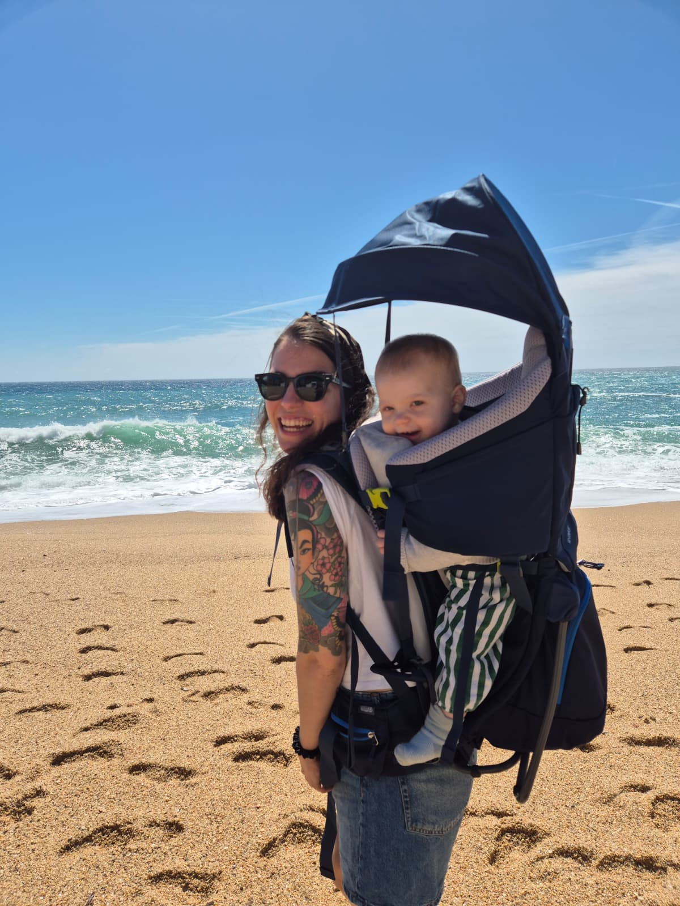
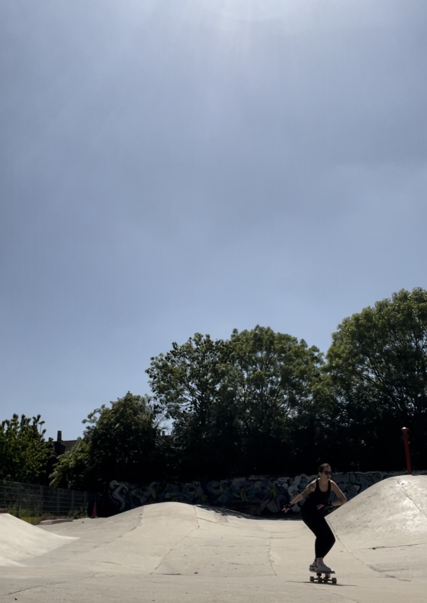
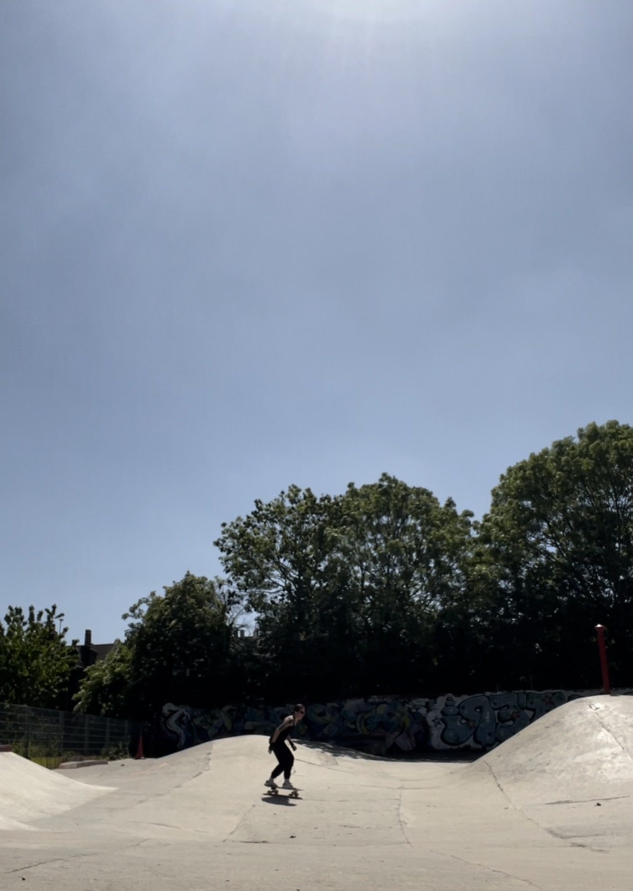
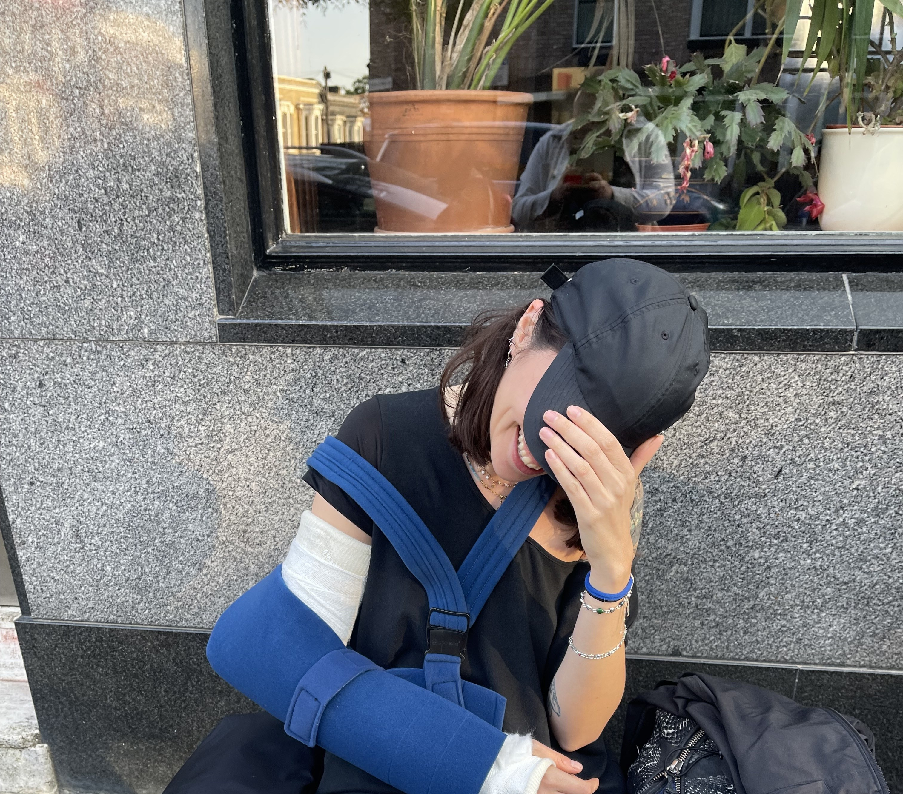
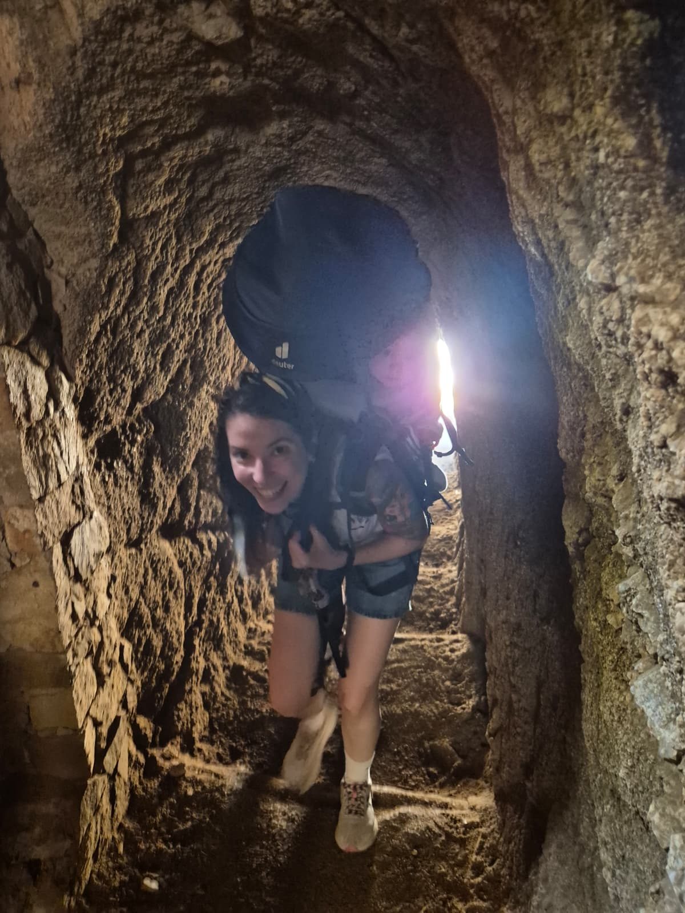
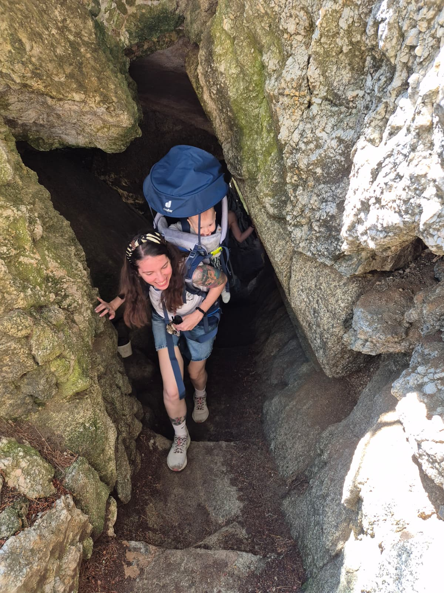

About me
Staff / Principal UX Researcher. I've been doing this for over 15 years — my first research was studying how baby chicks do maths (they can count to 8, by the way) and somehow led here.
The work
I'm a Staff / Principal UX Researcher with a background in Cognitive Psychology and Behavioural Science. My first research was studying numerical cognition in baby chicks as an undergraduate — and it eventually led to product research at Dow Jones (WSJ, Barron's, MarketWatch), King (Candy Crush Soda), and Welltech.
My work is mixed-methods and behavioural-science-informed. I'm drawn to problems where the data tells you what but not why — and where the answer actually changes something.

Beach in Portugal. Yes, I do adventure hikes with a baby on my back. Efficiency.
Outside work
I surf, skate, hike, and generally say yes to things that require a waiver. Results vary.

Skating. Fully in control. Nothing to worry about.

Still fine. This was taken three hours before the next photo.

Three hours later
The broken arm didn't change the answer to "want to go skating?" It just added a data point.
Adventures

A passage that definitely looked bigger on the map.

Consulting the co-researcher on route options. She was enthusiastic.